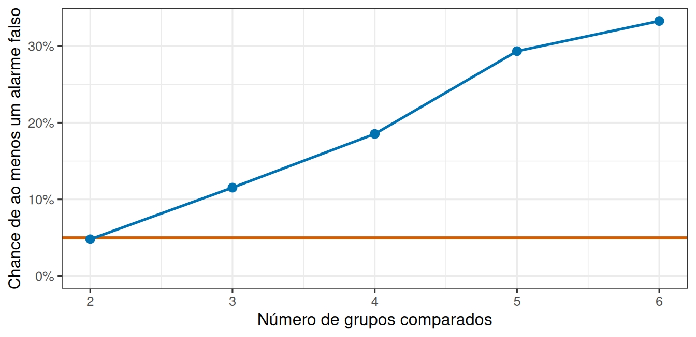
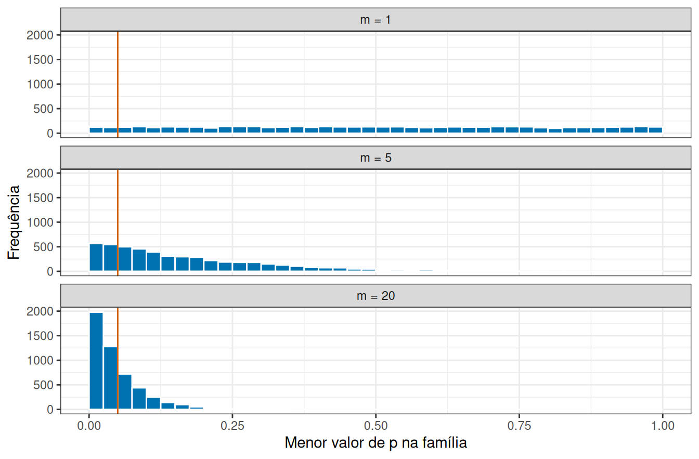
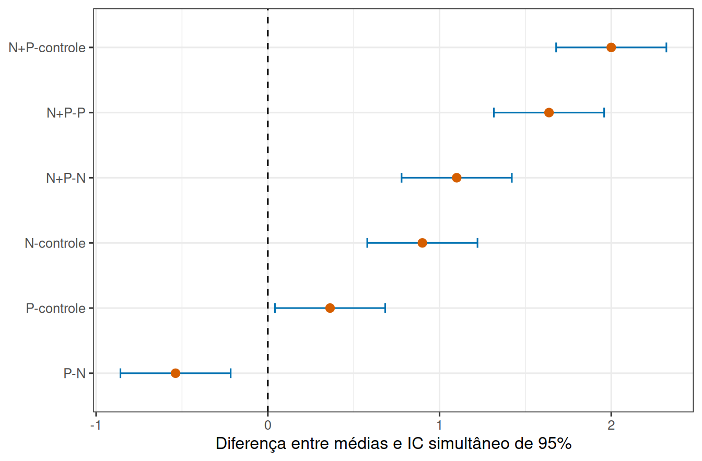

Comparar dois grupos é uma operação bem definida: existe uma diferença, existe uma régua para julgá-la, existe um resultado.
Agora suponha que o experimento tenha três. Um estudo em mesocosmos mede a concentração de três nutrientes na água, e a pergunta é se eles diferem entre si.
A saída óbvia é fazer o que já se sabe fazer, três vezes: comparar o primeiro com o segundo, o primeiro com o terceiro, o segundo com o terceiro. Três testes, três valores de p, e pronto.
Essa saída tem um problema, e ele não é pequeno.
2 Cada teste traz o seu próprio alarme falso
Um teste a 5% é um procedimento que, quando não há efeito nenhum, ainda assim acusa diferença em cerca de 5% das vezes. Esses 5% não são um defeito: são o preço combinado de antemão para poder decidir a partir de dados que variam.
O problema é que esse preço é cobrado por teste. Fazendo três testes em grupos idênticos, há três oportunidades de o acaso produzir um resultado chamativo, e basta que uma delas aconteça para alguém anunciar uma descoberta. Como os pares compartilham grupos, essas oportunidades são relacionadas, mas o risco do conjunto ainda cresce.
E o número de testes cresce depressa. Com \(k\) grupos, o número de pares é
\[\frac{k(k-1)}{2}\]
o que dá 3 pares com 3 grupos, 6 com 4 grupos e 15 com 6 grupos.
2.1 Quanto isso custa, em números
Saber que o risco cresce não diz o quanto ele cresce. A simulação abaixo constrói experimentos em que todos os grupos são idênticos, faz todos os testes entre pares e conta em que proporção das repetições pelo menos um deles acusou diferença.
Ver a simulação da inflação do erro familiar
prop_alarme <-function(k, repeticoes =1500) {mean(replicate(repeticoes, { grupos <-matrix(rnorm(k *6, mean =2, sd =0.5), nrow =6) pares <-combn(k, 2) valores_p <-apply(pares, 2, function(par) {t.test(grupos[, par[1]], grupos[, par[2]])$p.value })min(valores_p) <0.05 }))}numero_grupos <-2:6curva <-tibble(grupos = numero_grupos,alarme =vapply(numero_grupos, prop_alarme, numeric(1)))ggplot(curva, aes(x = grupos, y = alarme)) +geom_hline(yintercept =0.05, colour ="#D55E00", linewidth =1) +geom_line(linewidth =0.9, colour ="#0072B2") +geom_point(size =2.6, colour ="#0072B2") +scale_y_continuous(labels = scales::percent, limits =c(0, NA)) +labs(x ="Número de grupos comparados", y ="Chance de ao menos um alarme falso")

Figura 1: Proporção de experimentos em que pelo menos um teste entre pares acusa diferença, quando nenhum grupo difere de fato. A linha marca os 5% que cada teste isolado promete.
Com três grupos idênticos, cerca de 12% dos experimentos desta simulação produziram ao menos um par “diferente”. Com seis grupos, 33%.
Nenhum grupo difere de nenhum outro em nenhuma dessas simulações. A diferença anunciada seria inteiramente fabricada pelo procedimento de análise.
AvisoDuas taxas de erro com o mesmo nome
A taxa por comparação é o risco de alarme falso de cada teste isolado. Ela continua valendo 5%, e não é isso que está errado.
A taxa por experimento é o risco de alarme falso em algum lugar do conjunto de testes. É essa que interessa a quem lê o artigo, porque é ela que descreve a chance de a conclusão publicada estar errada.
Fazer muitos testes mantém a primeira e infla a segunda.
2.2 A conta por trás da inflação
A curva simulada pode ser antecipada por um cálculo simples, ao menos em um caso idealizado. Se \(m\) testes fossem independentes e cada um tivesse risco \(\alpha\) de alarme falso, a chance de nenhum alarme seria \((1-\alpha)^m\). Logo, a probabilidade de pelo menos um seria
\[
\operatorname{FWER}=1-(1-\alpha)^m.
\]
A sigla vem de familywise error rate, a taxa de erro da família de testes. Com três testes a 5%, essa conta resulta em \(1-0,95^3\approx0,143\), cerca de 14,3%, valor próximo ao que a simulação produziu. A aproximação não é exata porque comparações entre as mesmas médias não são independentes: cada grupo participa de vários pares. A simulação preserva essa dependência e por isso estima diretamente a taxa correta.
Vale ver de onde vem a fórmula, porque ela é um caso da probabilidade de uma união. Se \(A_i\) é o evento “o teste \(i\) produz alarme falso”, queremos \(P(A_1\cup\cdots\cup A_m)\). Para dois eventos,
\[
P(A\cup B)=P(A)+P(B)-P(A\cap B).
\]
Subtrair a interseção evita contar duas vezes os experimentos em que os dois testes rejeitam. Sob independência, \(P(A\cap B)=P(A)P(B)\) e chegamos à fórmula acima. Quando as comparações compartilham grupos, a interseção muda porque os eventos são dependentes. Existe, porém, um limite que dispensa qualquer suposição, a desigualdade de Bonferroni:
Ela afirma que a taxa familiar nunca ultrapassa a soma dos riscos individuais, e é exatamente por isso que limitar cada teste a \(\alpha/m\) garante o controle da família. Voltaremos a ela adiante.
3 Escolher o menor valor de p é escolher o extremo
Antes das correções, vale entender o mecanismo que produz a inflação, porque ele reaparece em muitas situações além desta.
Quando três testes são feitos e o resultado relatado é o mais chamativo dos três, o número informado não é o valor de p de um teste: é o mínimo de três valores de p. E mínimos de vários sorteios se concentram perto de zero mesmo quando cada sorteio isolado é bem comportado.

Figura 2: Distribuição do menor valor de p em famílias de 1, 5 e 20 testes nulos independentes.
No painel superior, com um único teste sob hipótese nula, os valores de p se distribuem uniformemente entre 0 e 1, e apenas 5% caem abaixo da linha. Nos painéis seguintes, o menor valor de p da família se acumula progressivamente à esquerda: com vinte testes, quase toda a distribuição está abaixo de 0,05. O mesmo raciocínio vale para quem testa vários nutrientes, várias espécies ou várias praias e relata só o que se destacou. Quanto mais coisas se olha, mais fácil encontrar alguma.
4 A saída é mudar a pergunta
Diante disso, a correção não é fazer os mesmos testes com mais cuidado. É fazer uma pergunta diferente, primeiro:
Existe alguma diferença entre os grupos?
Uma pergunta só, um teste só, um risco de alarme falso só. Se a resposta for que os grupos não se distinguem do que o acaso produz, a investigação para aí. Se for que se distinguem, aí sim vale descobrir quais deles.
A ordem importa: primeiro a pergunta global, depois as comparações específicas. E é justamente para essa segunda etapa que existem procedimentos capazes de considerar quantas comparações estão sendo feitas.
5 Depois da pergunta global, quais grupos diferem?
A segunda etapa não é única. O procedimento adequado depende de quando as comparações foram formuladas e de quantas delas compõem a família.
5.1 Comparações planejadas e comparações descobertas depois
Um contraste planejado traduz uma pergunta definida antes dos dados, como comparar o controle com a média dos três tratamentos. Ele é escrito como uma combinação das médias cujos coeficientes somam zero. Para médias \(\bar{y}_1,\ldots,\bar{y}_k\),
A restrição sobre os coeficientes garante que o contraste meça uma diferença, e não um nível geral: se todas as médias fossem iguais, \(C\) valeria zero qualquer que fosse a escala das medidas.
Um exemplo torna a ideia concreta. Para quatro médias \(\bar y_C,\bar y_1,\bar y_2,\bar y_3\), comparar o controle com a média dos tratamentos usa coeficientes \((-1,1/3,1/3,1/3)\), ou seja,
Os coeficientes expressam a pergunta antes de qualquer cálculo, e multiplicá-los todos pela mesma constante muda a escala do contraste, mas não sua estatística padronizada. Perguntas planejadas limitam o número de testes e costumam ter mais poder. Comparações escolhidas depois de olhar médias, gráficos ou valores de p pertencem a uma família exploratória maior e precisam de controle simultâneo. Chamar uma comparação de planejada depois de observar o resultado não desfaz a seleção.
5.2 Bonferroni, Tukey e Holm
Quando a família é exploratória, alguma correção é necessária. A correção de Bonferroni é a aplicação direta da desigualdade vista antes: ela controla a taxa familiar para qualquer conjunto de \(m\) testes, comparando cada valor de p com \(\alpha/m\) ou, de modo equivalente, ajustando \(p_{ajustado}=\min(mp,1)\). É simples e válida mesmo com dependência, ao custo de ser conservadora quando há muitas comparações.
# A tibble: 3 × 3
comparacao p_original p_bonferroni
<chr> <dbl> <dbl>
1 A - B 0.008 0.024
2 A - C 0.031 0.093
3 B - C 0.18 0.54
Os três valores originais foram multiplicados por 3, o número de comparações. O primeiro par continua abaixo de 0,05 depois do ajuste; o segundo, que parecia significativo, deixa de ser.
O procedimento de Tukey foi construído especificamente para todas as comparações entre pares de médias depois de uma ANOVA. Ele usa a amplitude studentizada \(q\), que considera simultaneamente a maior separação entre médias. Em um desenho balanceado, a diferença mínima de Tukey é
onde \(k\) é o número de grupos, \(gl_e\) e \(QM_e\) são os graus de liberdade e o quadrado médio residual, e \(n_g\) é o número de unidades por grupo. Um par é distinguido quando a diferença absoluta entre as médias ultrapassa esse valor. A mesma decisão pode ser apresentada como intervalos simultâneos, que mostram além disso a incerteza e a magnitude de cada diferença.

Figura 3: Intervalos simultâneos de Tukey para todas as diferenças entre quatro médias. Intervalos que cruzam zero não distinguem o par ao nível familiar de 5%.
Cada linha da figura corresponde a um par de tratamentos, com a diferença estimada e seu intervalo simultâneo. Os pares cujo intervalo cruza a linha do zero não são distinguidos ao nível familiar de 5%. Apresentar o resultado assim, e não como uma lista de letras ou de decisões, preserva direção, magnitude e incerteza de cada comparação.
Um terceiro procedimento, o de Holm, também controla a taxa familiar e costuma ser menos conservador que Bonferroni em famílias gerais: ele ordena os valores de p e aplica limites progressivamente menos rígidos. A escolha entre os três segue a família de perguntas, e não o método que devolve mais resultados abaixo de 0,05. Bonferroni e Holm servem para famílias quaisquer definidas pelo pesquisador; Tukey é mais eficiente quando a família é exatamente o conjunto de todos os pares. Nenhum deles corrige a prática de testar muitas respostas e relatar apenas a família mais favorável.
Convém acrescentar que o teste global e os testes entre pares não são logicamente idênticos. Em situações limítrofes, uma ANOVA pode não rejeitar a hipótese global enquanto um contraste planejado bem direcionado é preciso o bastante para detectar o efeito, ou o inverso. A sequência global seguida de Tukey é uma estratégia coerente para explorar todos os pares, mas perguntas planejadas devem ser declaradas e analisadas como tais.
O terceiro grupo do início, portanto, não acrescenta apenas mais uma comparação: ele muda a natureza da pergunta. Enquanto havia dois grupos, a diferença entre eles era a pergunta inteira. Com três ou mais, a pergunta passa a ser sobre o conjunto, e o risco de erro precisa ser controlado no nível do conjunto. Decidir isso antes de olhar os dados é o que separa uma análise de uma busca por resultados.
6 Para saber mais
Quinn e Keough (Quinn e Keough 2002) dedicam um capítulo às comparações múltiplas, com a comparação detalhada entre os procedimentos citados aqui e outros métodos disponíveis.
DicaPara pensar
Um estudo compara a riqueza de peixes entre cinco estuários, faz todos os testes entre pares e relata os dois que deram p menor que 0,05. Quantos testes foram feitos, e o que falta informar?
Se cada teste isolado continua com risco de 5%, por que dizer que o conjunto de testes “está errado”?
7 Referências
Quinn, Gerry P., e Michael J. Keough. 2002. Experimental Design and Data Analysis for Biologists. Cambridge University Press.